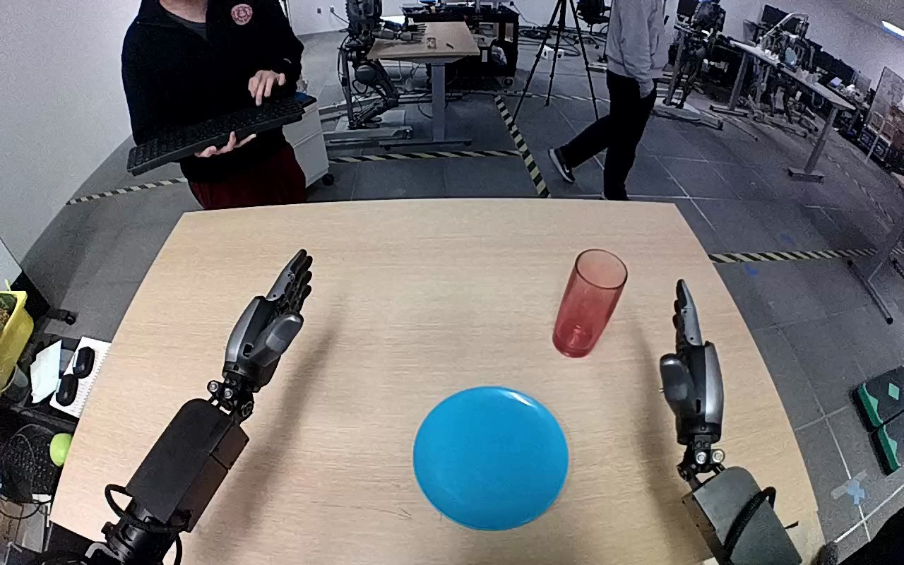

NVIDIA GR1 · 24
Video 24

Visual review action_review.json
{
"prompt_protocol": "humanoid_action_v1",
"prompt_provenance": "visually_authored_from_video_and_initial_frame",
"reviewed_contact_sheets": [
"sheet_001.jpg"
],
"inspected_frame_stride": 2,
"inspected_sampled_frame_count": 60,
"observed_sequence": [
{
"frame_interval": [
0,
20
],
"observation": "Both hands are open above the tabletop; the red translucent tumbler stands upright to the robot right beyond the blue plate. Left hand remains stationary throughout.",
"confidence": "high"
},
{
"frame_interval": [
21,
56
],
"observation": "Right forearm advances toward the tumbler with fingers spread; the hand brackets the sides while the tumbler remains upright on the tabletop.",
"confidence": "high"
},
{
"frame_interval": [
57,
78
],
"observation": "Right fingers close around the tumbler, establishing a side grasp while it remains close to its original tabletop position.",
"confidence": "high"
},
{
"frame_interval": [
79,
102
],
"observation": "Right hand lifts the tumbler and carries it diagonally inward toward the blue plate while rotating its axis from upright to almost horizontal; open rim turns toward the robot left.",
"confidence": "high"
},
{
"frame_interval": [
103,
114
],
"observation": "Right hand lowers the sideways tumbler over the plate; the cylinder extends across the plate, open rim to robot left and base to robot right.",
"confidence": "high"
},
{
"frame_interval": [
115,
119
],
"observation": "Right fingers open around the sideways tumbler. It lies across the blue plate with the open rim overhanging its left edge; the right hand remains immediately over and around it without visible withdrawal.",
"confidence": "high for pose and hand opening; medium for complete release"
}
],
"arm_hand_roles": {
"right": "Sole manipulating hand: approaches, grasps the tumbler by its sides, lifts, transports, turns sideways, lowers across plate, and opens its fingers at the end.",
"left": "Remains open and approximately stationary above the robot-left side of the table; provides no object or plate support.",
"coordination": "Single-hand manipulation, with no hand-to-hand transfer or person-object interaction."
},
"anatomical_side_evidence": {
"observation": "The camera looks forward from behind/above the paired robot forearms, which enter from the lower robot-side edge toward the table. The hands face inward with mirrored thumb placement: the active hand on the image right has its thumb toward the central workspace, consistent with the robot right hand in this forward-looking view. This establishes robot-relative sides from forearm direction and hand chirality rather than image-side naming alone.",
"confidence": "high",
"limitation": "Shoulders and torso are outside the generation view."
},
"initial_scene": "Red translucent cylindrical tumbler upright on the robot-right tabletop; blue circular plate nearer the robot in the central workspace; both robot hands open on either side. Background people do not contact the target.",
"evidence_frame_indices": [
0,
36,
56,
74,
78,
86,
102,
112,
114,
116,
118,
119
],
"terminal_state": "Tumbler lies nearly horizontal across the blue plate, open rim toward robot left and projecting beyond the plate edge. Right fingers are open but the hand remains over/around the tumbler. Left hand remains idle.",
"uncertainties": [
"The last frame does not show the right hand withdrawn clear of the tumbler; complete fingertip separation and an independently settled resting state after withdrawal are not established.",
"The visible translucent tumbler does not establish whether its material is glass or plastic."
],
"annotation_discrepancies": [
"The source instruction identifies the object as a red glass; visual evidence supports a red translucent tumbler without establishing its material. The observed destination pose is sideways across the plate, and the clip ends with the right hand still immediately over the object rather than a withdrawn hand."
],
"selected_execution_status": "incomplete",
"outcome_basis": "Grasp, lift and transport to the plate are visible, followed by sideways lowering and finger opening; completion of independent release is unverified.",
"video_id": "24",
"dataset": "NVIDIA_GR1_100",
"dedicated_review_agent": "review_gr1_24",
"review_source_video": "NVIDIA_GR1_100/24/original/original.mp4",
"source_frame_count": 120,
"source_fps": 20.0,
"native_detail_frames": [
36,
56,
74,
78,
86,
102,
112,
114,
116,
118,
119
],
"world_model_prompt": "The robot uses its right hand to grasp the red translucent tumbler around its sides and lift it from the tabletop. It carries the tumbler toward the blue plate, turns it nearly horizontal, and lowers it onto its side across the plate. The right fingers open while the hand remains over the tumbler. Keep the camera fixed; preserve robot geometry, physically valid joint motion, and normal gripper opening and closing.",
"original_task_instruction": "Use the right hand to pick up red glass from right side of table to blue plate.",
"selected_segment": {
"start_frame": 0,
"end_frame_exclusive": 120,
"reason": "Complete original single-task reference; no cropping or trimming requested."
},
"source_video_sha256": "4b5971a96c10125950043930703b8f3f20d2c44061da9fd9bed5026043b69932",
"review_completed_at": "2026-10-13T17:54:12.802051+00:00"
}